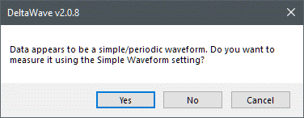
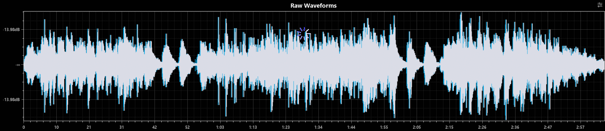
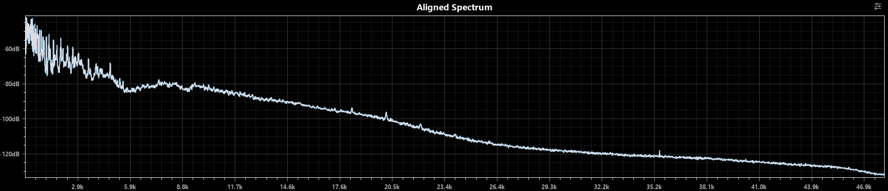
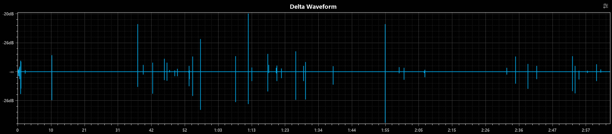
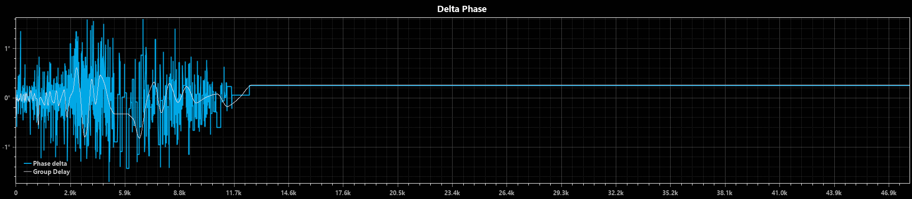
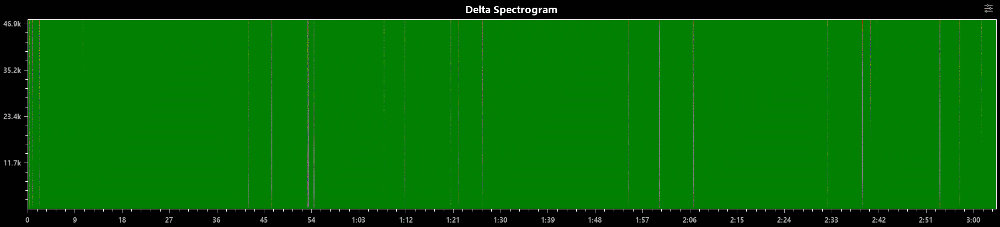
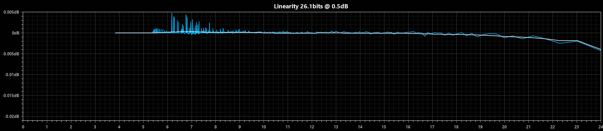
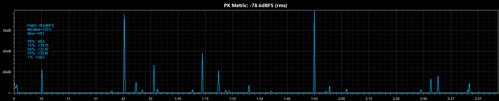
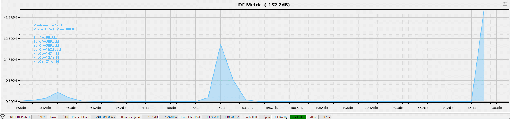
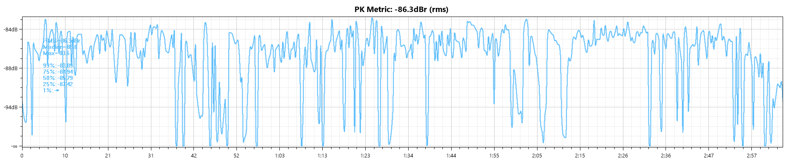

visualizing differences betweeen music files before and after tick removal
Wave Corrector selectively removes suspected tick and pops from LP recordings;
DeltaWave analyzes differences between music files,
in this case before and after Wave Corrector.
The recording is "Jesse" from Joan Baez' "Diamonds and Rust" half-speed mastered Nautilus LP.
This record had been cleaned by a Keith Monks machine and StyLast treated before first playing, over 40 years ago.
Some younger CDs are no longer playable...
Neither ticks nor pops were noted while recording,
but Wave Corrector identified anomalies that seem credible blemishes.
Wave Corrector was run with default settings, except threshold reduced from 3 to 1.
It incorrectly identified several quiet interludes in the song as track breaks; those were corrected.
About 27 seconds of mistracking were recorded at the song start and deleted in the deticked copy.
DeltaWave was unable to match tracks until setting Trim Front: 25 sec;
remaining trash presumably threw off difference metrics and may have provoked this popup:

Here are unalighed waveforms:

.. then aligned spectra:

As hoped, waveforms differ only when ticks are corrected:

I suppose that a lack of phase differences above 13kHz implies lack of energy:

As with waveforms, spectrogram delta shows differences only for removed ticks:

X-axis time stamp variations were unexpected
Linearity spikes are presumably also tick removal artifacts:

Superficial understanding of PK Metric suggests audibility of 2 tick corrections.

The DF metric suggests something should be rarely audible;
that may be from the vestigal 2 first mismatched seconds:

Camera icon at lower left was not noticed until the final screen capture...
According to developer pkane, PK dBr better corresponds to audibility:

- 18 Apr 2023